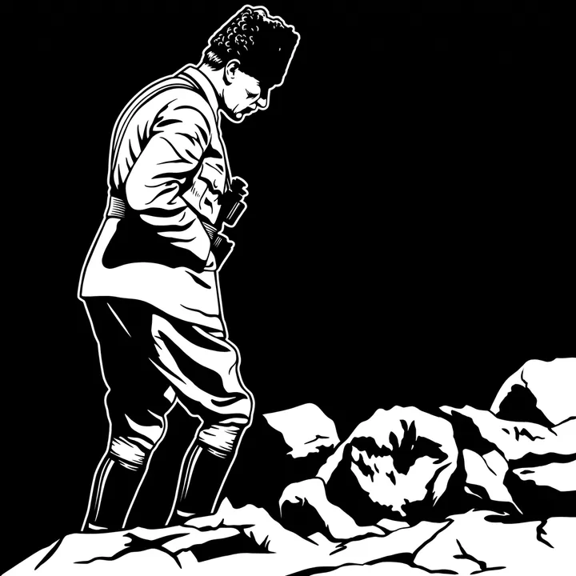
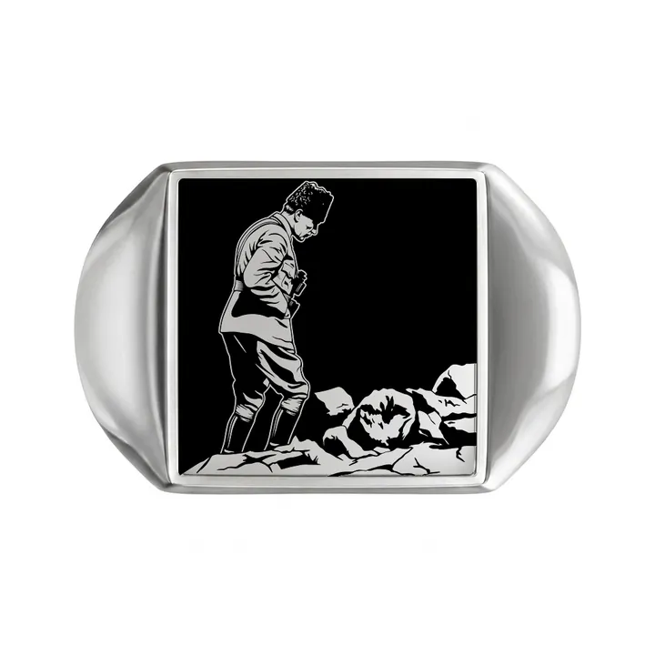
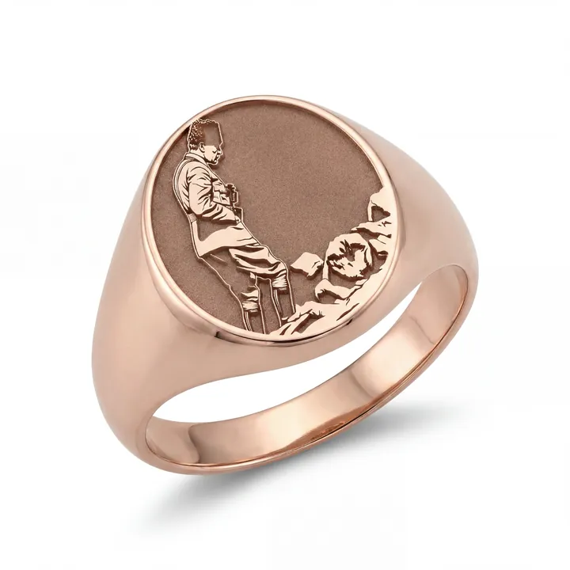
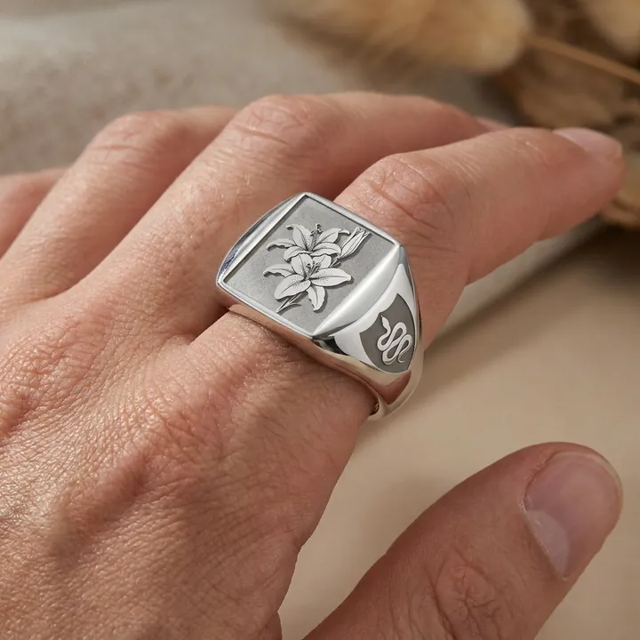
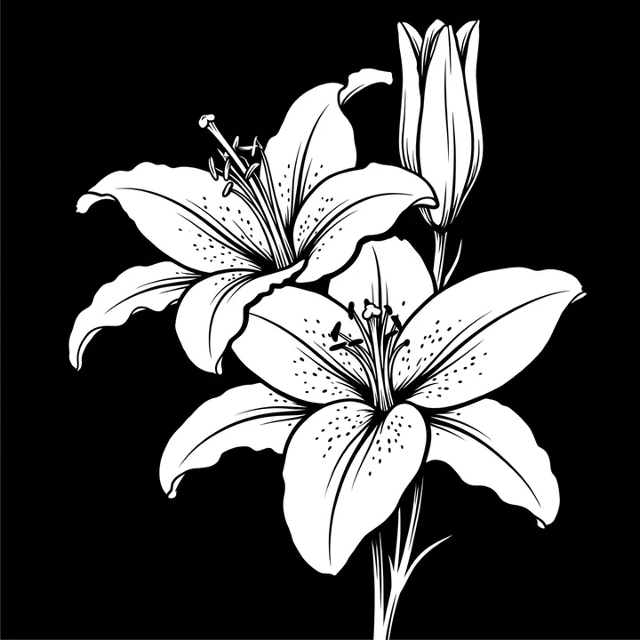
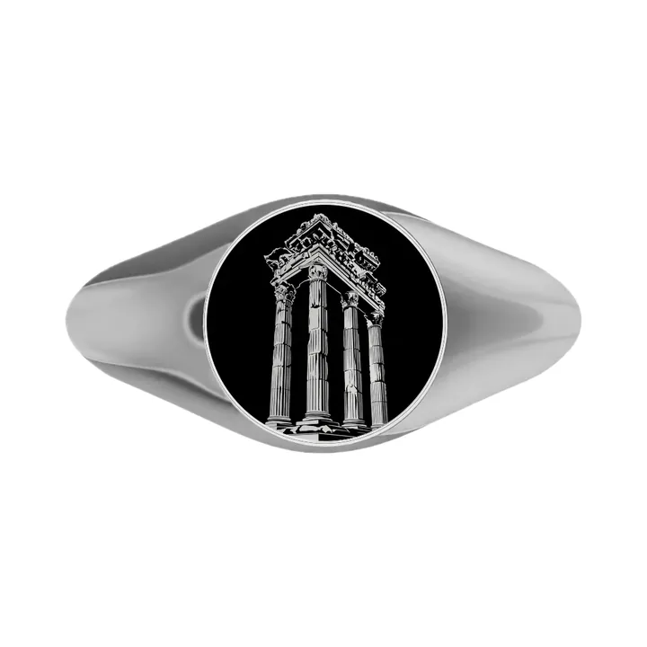
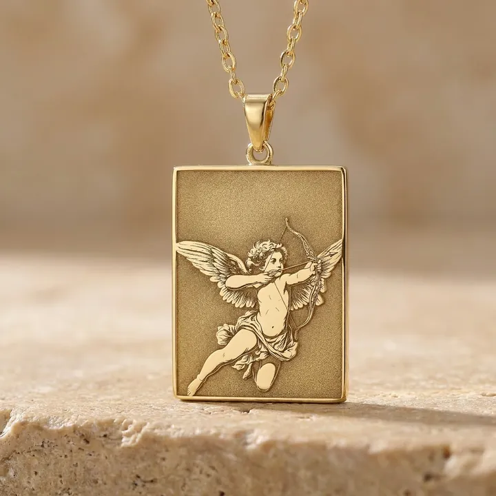
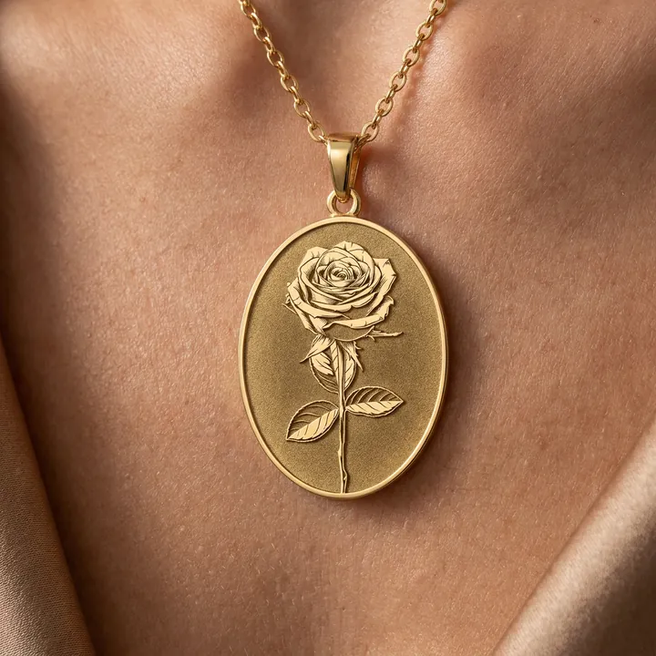
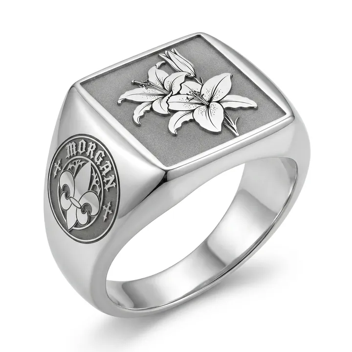
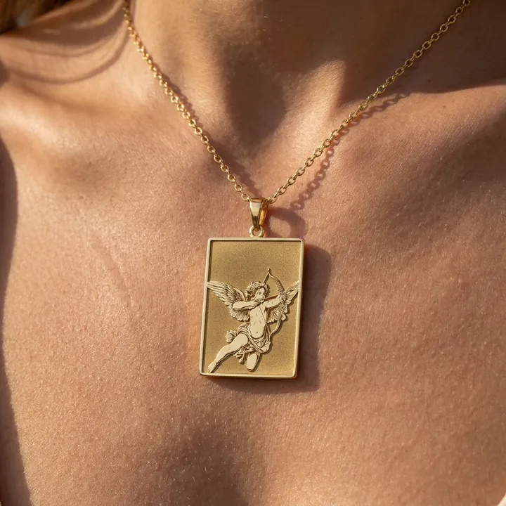

Nasıl çalışır
Görselden mücevhere, dört adımda.
Atelify, yüklediğin görseli kazımaya hazır bir çizime, sonra gerçek bir yüzük ya da kolyeye dönüştürür. Satışa hazır mockup ve manken görsellerini de aynı akışta üretirsin.
- 10
- ücretsiz başlangıç kredisi
- 4
- aşama: taslak, ürün, mockup, manken
- 0
- kredi: ürün görseli her zaman ücretsiz
Atelify ile üretildi




Akış
Dört net adımda sonuç alınır.

Görselini yükle.
Portre, logo, mimari ya da evcil hayvan fotoğrafı yeterli. Yapay zekâ konuyu korur ve kazımaya hazır bir gravür çizimi çıkarır; detaylı ya da minimalist stil seçebilirsin.

Kalıba yerleştir.
Çizim gerçek yüzük ve kolye kalıplarına oturur. Metal, şekil ve yüzeyi seçersin. Bu adım yapay zekâ kullanmaz; sonuç anında ve ücretsizdir.

Satış görselini al.
Ürünün stüdyo ışığında, beyaz zeminde ya da sahneli fotoğrafı hazırlanır. Etsy, Instagram veya katalog için uygun çıktı alırsın.

Üzerinde gör.
Kolyenin boyunda, yüzüğün elde nasıl durduğunu görürsün. Müşterine ürünü gerçek kullanımda gösteren görsel hazır olur.
Final kararı
Sonuçtan sonra iki yol var.

SiparişAtelify üretir.
Beğendiğin tasarımı kolye, yüzük ya da zincir olarak sipariş verirsin. Metal, ölçü ve adedi seçersin; sipariş atölyeye iletilir.
Atelify'dan başla
Satış görselleriKendi mağazanda kullan.
Mockup ve manken görsellerini tek tek ya da toplu olarak indirir; mağazanda, sosyal medyada veya kataloğunda kullanırsın.
Paketlere bakKontrol
Her turda tasarımın özü korunur.
Başla